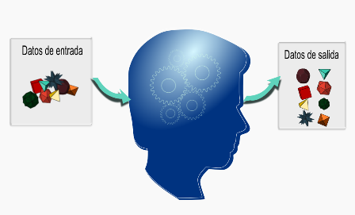
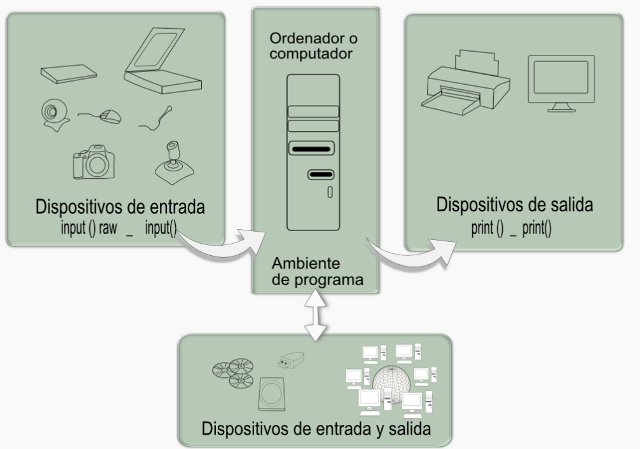

Capítulo VII - Archivos y comandos de entrada y salida

En el ambiente del programa se puede procesar todo tipo de información digital, pero primero se requiere digitalizar la información y definir los elementos con los cuales se ingresará información o se exteriorizara los resultados de un proceso desarrollado por el ordenador.
Estos elementos se conocen como elementos de entrada y salida de información y son de muy diversa naturaleza según sea la aplicación. Los teclados y las pantallas son posiblemente los primeros elementos de entrada y salida de información que se nos vienen a la cabeza. El disco duro, las cámaras, los micrófonos, las memorias USB o los comandos de video juegos son otros posibles elementos de entrada de información. Los parlantes, los puertos de comunicación o las memorias USB son otros posibles elementos de salida de información.
En este capítulo se presentarán los primeros elementos para el manejo de la entrada y salida de información al ambiente del programa. Los elementos primarios de lectura de información serán el teclado y los archivos, mientras que los elementos primarios de salida de información serán la pantalla y los archivos de textos.
Objetivos de aprendizaje
- Aprender comando de entrada de datos.
- Usar comandos de presentación de datos.
- Aplicar y usar la interacción del programa con archivos.
- Usar funciones y comandos de Python para entrada y salida de datos.
Subtemas del capítulo
Archivos y comandos de entrada y salida
Al desarrollar una aplicación de computador se genera un ambiente de la máquina con una información y un procedimiento que se aplica a los datos. Los datos se designan usando diferentes tipos de variables u objetos, tales como los arreglos que se presentaron en el capítulo VI. Con los datos ya nombrados dentro del ambiente del programa, se pueden realizar o programar funciones, métodos o ciclos para obtener un objetivo predefinido por el problema planteado inicialmente.
Quedan entonces pendientes dos aspectos fundamentales: el primero es la forma en que podemos ingresar información al ambiente del programa, que pueden ser datos propios y no deben ser modificados o datos que ingresará un usuario cualquiera del programa. Un segundo aspecto está relacionado con la forma que la información procesada será presentada fuera del ambiente del programa para ser procesada o leída por otra aplicación cualquiera, o para ser visualizada directamente por el usuario.
En la actualidad se puede pensar en muchas posibilidades de elementos de entrada y salida de información, y los lenguajes de programación disponen de herramientas específicas según las necesidades, pero como en un primer paso veremos la forma de ingresar información a través del teclado o leyendo de un archivo y la salida de información a través de la pantalla o escribiendo en un archivo de texto.

En la Imagen (GALEANO, 2011ac) se muestra un esquema de los elementos de entrada y salida de información al ambiente de programación que trabajaremos en este capítulo.
 )
)Comandos de entrada de datos
(Wikibooks, 2011; Docs Python, 2011b; Penzilla, 2011)
El teclado en el ordenador es el primer elemento disponible para entrada de información y los lenguajes de programación disponen de comando para esperar que el usuario ingrese algún dato antes de continuar el proceso.
En Python se dispone de dos funciones para la entrada de información desde el teclado: los comandos raw_input() e input(). El comando raw_input() recibe la información siempre como una cadena de caracteres directamente desde el teclado y hace la pausa en el programa hasta cuando se ingresa totalmente la información terminada por la tecla de entrar ( 'enter'). El argumento de entrada en la función es un comentario que aparecerá en la pantalla antes del espacio de ingreso de datos. Veamos un ejemplo de su aplicación en el interface de Python (Python shell):
>>>dato1 = raw_input('Escriba un dato aqui: ')
Escriba un dato aquí: TECLADO
>>>dato1
'TECLADO'
>>>type(dato1)
<type 'str'>
>>>La primera línea define que se asignará en la variable dato1 lo que se escriba desde el teclado y aparecerá primero un mensaje diciendo Escriba un datos aquí: para esperar la entrada del dato. Al escribir la palabra TECLADO, ésta se guardará en la variable tipo alfanumérica ( 'str' ) denominada dato1 como se muestra al usar la función type().
Comandos de salida de información
(Wikibooks, 2011; Docs Python, 2011b; Docs Python, 2011c)
La pantalla del ordenador es el primer elemento de salida visual, y los lenguajes de programación disponen de funciones o comando para facilitar la salida de información a través de este elemento o interface de usuario. Podemos también hablar de salidas sonoras o puertos de comunicación, pero en esta sección no se presentará cómo se programa para utilizar esos otros elementos de salida de información.
En la versión Python 2.7 se dispone tanto del comando como de la función interna print(), el cual presenta en pantalla la información que se requiere, pero tiene una gran cantidad de variantes posibles para flexibilizar su aplicación según los requerimientos del programador. Si se usa print como comando, se escribe después de esta palabra clave lo que se desee presentar en pantalla con el formato adecuado. Si se usa como función interna, se escribe dentro del paréntesis lo que se desea presentar en pantalla, pero dispone de argumentos adicionales para definir el elemento de salida deseado. La función interna no está normalmente disponible, pero se puede habilitar usando la línea from __future__ import print_function al inicio del programa o en el interface Python (Python shell).
Su forma general como función es:
print([object, ...][, sep=' '][, end='\n'][, file=sys.stdout])Su forma general como comando es:
print_stmt ::= "print" ([expression ("," expression)* [","]]
| ">>" expression [("," expression)+ [","]])
Todos los objetos o variables son convertidos a cadena de caracteres para ser luego presentados en pantalla con el formato predefinido.
Manejo de Archivos
(Wikibooks, 2011; Docs Python, 2011b; Dev Shed Tutorials, 2011)
Cuando se desarrollan aplicaciones de computador se requiere en muchos casos escribir o leer información que está o se requiere almacenar en alguna otra parte, por ejemplo, en el mismo disco duro, en una memoria USB o en algún sitio de Internet.
Los lenguajes de programación disponen de comandos pare realizar la conexión entre el ambiente del programa y unidades de almacenamiento de información apoyándose en el sistema operativo que se trabaja. Python dispone para esta acción de interactuar con archivos de datos la clase file, la cual es convocada para generar objetos de intercambio de información mediante la función “open()”.
La función “open()” requiere como mínimo de un argumento, el nombre del archivo y un segundo argumento que define el modo de uso del archivo con uno de los siguientes caracteres:
'r' modo solo de lectura (de la palabra en ingles 'read')
'w' modo solo de escritura (de la palabra en ingles 'write')
'a' modo de adición de datos (de la palabra en ingles 'append')El modo r permite la opción del carácter '+' para acciones simultáneas de lectura y escritura, y el carácter 'b' para intercambiar información en modo binario. Al omitir este argumento se asume que el archivo está en modo de lectura. El modo binario de intercambio de información no lo discutiremos en esta sección, sólo usaremos el modo de información formateado que podremos leer directamente desde un editor de texto cualquiera.
Veamos un ejemplo para crear un archivo y escribir en él una información:
>>>myf1 = open('archivo1.txt','w')
>>>myf1.write('Este es el primer renglo \n y el segundo.')
>>>myf1.close()
Nota: A continuación se encuentran las referencias bibliográficas utilizadas para la construcción de los contenidos de este capítulo: